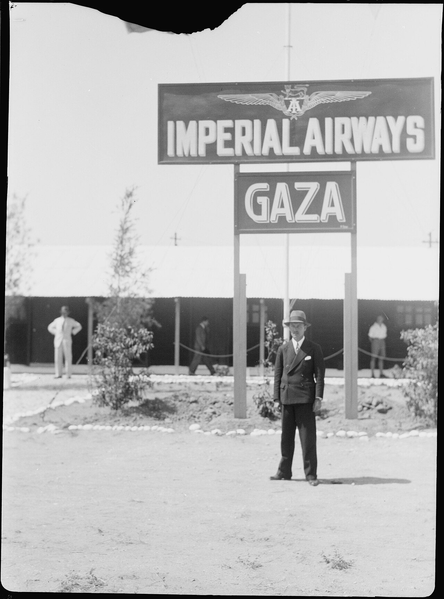

Esta página es una traducción del original alemán (versión del 16 de noviembre de 2026). Los enlaces llevan a páginas en alemán, salvo que se indique lo contrario.
La guerra desde 2023 y su calificación jurídica
La Comisión Internacional Independiente de Investigación de las Naciones Unidas sobre el Territorio Palestino Ocupado, incluida Jerusalén Oriental, e Israel concluyó en septiembre de 2025 que las autoridades y las fuerzas de seguridad israelíes en la Franja de Gaza han cometido y siguen cometiendo genocidio. Constató cuatro de los cinco actos del artículo II de la Convención sobre el Genocidio –matanza, lesión grave, condiciones de existencia destructivas, impedimento de nacimientos (letras a–d)– y la intención de destruir, total o parcialmente, a los palestinos de Gaza. Esa intención sería «la única inferencia razonable» de la totalidad de las pruebas (A/HRC/60/CRP.3, 16/9/2025, párrs. 252 y 254; informe a la Asamblea General A/80/337, párrs. 66–70).
Novedad desde octubre de 2026: En su informe de seguimiento A/81/430 (14/10/2026, presentado a la Asamblea General el 26/10/2026), la Comisión constata que las autoridades y fuerzas israelíes, también después del alto el fuego, siguen cometiendo actos de genocidio con intención genocida («continue to commit genocidal acts with the genocidal intent», párrs. 54, 59). → La cuestión del genocidio: conclusión, pruebas, posiciones contrarias
- 1No es una sentencia judicial. La Comisión es un órgano creado por el Consejo de Derechos Humanos de la ONU y aplica el criterio de «motivos razonables». Solo la Corte Internacional de Justicia puede dictar sentencia: el caso Sudáfrica contra Israel sigue en curso; el último plazo para los escritos vence el 22/5/2029 y desde el 22/9/2026 no hay ningún nuevo paso procesal (CIJ, caso 192, consultado el 16/11/2026).
- 2Israel rechaza la conclusión: el Ministerio de Asuntos Exteriores calificó el informe el 16/9/2025 de «distorsionado y falso» (Reuters en Channels TV, según la prensa); la misión de Israel en Ginebra calificó el informe de seguimiento el 27/10/2026 de parte de una «misinformation campaign» (Reuters en Business Day, según la prensa).
Verificación: no probado Israel no ha presentado una refutación de las distintas conclusiones; no coopera con la Comisión. La Comisión respalda cada acto con referencias. → Todas las posiciones contrarias con verificación - 3Ningún órgano principal de la ONU –Asamblea General, Consejo de Seguridad, Consejo de Derechos Humanos– ha adoptado hasta ahora una resolución que constate un genocidio; hasta el 16/11/2026 no se añadió ninguna.
A continuación, la página cuenta la historia de la Franja desde el principio; la guerra en curso está en el capítulo 4, el hambre y la destrucción en el capítulo 5, el número de muertos en el capítulo 6.
Tres cosas que hay que saber antes de hablar de Gaza
Sin estos tres datos, cualquier debate sobre Gaza queda sesgado. Son indiscutibles y pueden consultarse en cualquier estadística oficial.
La mayoría de las personas de Gaza no son originarias de Gaza. Proceden de Jaffa, Ascalón (Maydal), Beerseba, de unas 250 aldeas del actual sur de Israel — algunas a menos de veinte kilómetros de los campamentos en los que hoy viven sus descendientes. Quien quiera entender por qué la Franja no es un territorio normal tiene que empezar aquí: Gaza es, en gran parte, un campamento de refugiados que se ha convertido en una ciudad.
Israel retiró a sus colonos y soldados en 2005. Sin embargo, las Naciones Unidas, la Corte Internacional de Justicia y la gran mayoría de los Estados siguen considerando la Franja territorio ocupado — porque Israel controla el espacio aéreo, las aguas costeras, el registro de población, las aduanas y seis de los siete pasos fronterizos. El séptimo, Rafah, linda con Egipto; en mayo de 2024 el ejército israelí tomó también su lado gazatí. Un gobierno que no puede decidir quién entra y sale, quién figura en el registro de población y qué entra en el territorio no es un gobierno soberano.
De ciudad de caravanas a franja aislada
Gaza es una de las ciudades habitadas de forma ininterrumpida más antiguas del mundo. Que se convirtiera en una franja aislada no es una tragedia de tres mil años, sino el resultado de decisiones que pueden fecharse.
hasta 1917Cuatro milenios en la Via Maris
Gaza se encuentra en la Via Maris, la ruta costera entre Egipto y Mesopotamia — la ruta comercial más importante de la Antigüedad. La ciudad se menciona en fuentes egipcias del segundo milenio a. C., fue una de las cinco ciudades filisteas y perteneció a Persia, al imperio de Alejandro, a Roma y a Bizancio.
Seguir leyendo (1 párrafo)
Desde 637 fue islámica; se dice que el bisabuelo del Profeta está enterrado allí, y al-Shafi'i, fundador de una de las cuatro escuelas jurídicas suníes, nació en Gaza en 767. Bajo los otomanos, Gaza fue sede administrativa de un distrito propio y un centro del comercio de especias y cereales.
Durante el Mandato británico, Gaza fue la capital de uno de los seis distritos administrativos de Palestina. Este distrito se extendía mucho hacia el norte y el este — hasta Maydal (hoy Ascalón), Isdud (hoy Asdod) y Beerseba. La Franja actual es solo un resto de él.

1948/49Cómo nació la Franja: a partir de una línea de armisticio
La Franja de Gaza como unidad geográfica existe solo desde el 24 de febrero de 1949. Ese día, Israel y Egipto firmaron en Rodas un acuerdo de armisticio. La línea en la que se encontraban las tropas se convirtió en frontera. Lo que quedó dentro fue una franja de unos 41 kilómetros de largo y, en algunos puntos, solo seis kilómetros de ancho.
Antes de la guerra vivían en esta zona unas 80.000 personas. A finales de 1949 se habían sumado unos 200.000 refugiados — personas de los pueblos y ciudades situados al norte y al este de la nueva línea, a las que no se permitió regresar. La población se multiplicó por más de tres en el plazo de un año, y un distrito agrícola se convirtió en la zona de refugiados más densa del mundo. Los ocho campamentos — Yabalia, Shati, Nuseirat, Bureij, Maghazi, Deir al-Balah, Jan Yunis y Rafah — siguen existiendo hoy.
1948–1967Bajo administración egipcia — y las masacres de 1956
Egipto no anexionó la Franja, sino que la administró militarmente. Los habitantes no recibieron la ciudadanía egipcia, sino documentos de viaje — un estado de indefinición cuyas consecuencias perduran hasta hoy.
En la guerra de Suez, Israel ocupó la Franja de noviembre de 1956 a marzo de 1957. En esos cuatro meses se produjeron dos sucesos que en Gaza conoce cualquier niño y que fuera casi nadie conoce:
Jan Yunis. Una investigación de la UNRWA constató 275 palestinos muertos en la ciudad y en el campamento de refugiados contiguo.
Rafah. En el campamento de refugiados de allí murieron, según las listas de nombres del informe especial de la UNRWA (A/3212/Add.1), 111 personas, 103 de ellas refugiadas.
Desenlace: No hubo ningún proceso penal. Israel negó durante mucho tiempo que se tratara de algo más que combates. Verificación: simplificado El informe especial de la UNRWA a la Asamblea General de la ONU (A/3212/Add.1) cuenta los muertos en la ciudad y en los campos de refugiados; en Rafah, según las listas de nombres, 103 de los 111 muertos eran refugiados. Israel no ha presentado pruebas de que estas personas murieran en combate.
Seguir leyendo (1 párrafo)
El dibujante de cómics maltés-estadounidense Joe Sacco reconstruyó los dos días a lo largo de años de entrevistas con testigos y los publicó en 2009 como Footnotes in Gaza — hasta hoy la exposición más detallada que existe.

1967–2005Ocupación, excavadoras, asentamientos
En junio de 1967, Israel ocupó la Franja. Lo que siguió es, en sus rasgos básicos, la misma estructura que en Cisjordania: administración militar, tribunales militares, obligación de permisos, confiscaciones de tierras — solo que en un espacio reducidísimo.
- 1971 — la «pacificación»: Como jefe del Mando Sur, Ariel Sharón hizo abrir amplios corredores a través de los campamentos de refugiados de Yabalia, Shati y Rafah para que pudieran entrar vehículos militares. Según datos de la ONU, solo en el verano de 1971 más de 15.000 personas se vieron afectadas por demoliciones; unas 2.400 familias perdieron su vivienda para la construcción de unos 300 kilómetros de caminos de patrulla. Más de 10.000 habitantes de Yabalia y Shati fueron llevados a campamentos en la península del Sinaí — una deportación fuera del territorio ocupado. Uno de estos campamentos, el «Canada Camp», seguía existiendo décadas después.
- Desde los años setenta: Israel construyó en la Franja 21 asentamientos, la mayoría en el bloque de Gush Katif, en el sur. Al final vivían allí unos 8.000 colonos — frente a aproximadamente 1,3 millones de palestinos. Los asentamientos y las zonas militares cerradas para su protección ocupaban una parte considerable de un territorio ya de por sí diminuto, además de la mayor parte de las aguas subterráneas.
- 9 de diciembre de 1987: En el campamento de Yabalia comienza, tras un accidente de tráfico en el que un camión israelí mató a cuatro trabajadores palestinos, la Primera Intifada. Parte de Gaza, no de Cisjordania.
- 1994: Tras los Acuerdos de Oslo, la Autoridad Nacional Palestina asume la administración — pero no las fronteras.
1991–2000El cierre empezó antes de Hamás
Un error muy extendido sostiene que el cierre de Gaza fue la respuesta a la toma del poder por Hamás en 2007. En realidad, comenzó dieciséis años antes.
- Enero de 1991, durante la guerra del Golfo: Israel impone un toque de queda general y, por primera vez, un cierre general de los territorios ocupados.
- Marzo de 1993: La excepción se convierte en norma permanente. Se introduce el sistema de permisos: desde entonces, quien quiere salir de Gaza — para trabajar, estudiar o recibir tratamiento médico — necesita un permiso israelí. Eso fue antes de Oslo, antes de la Autoridad Palestina, antes de cualquier gobierno de Hamás.
- Decenas de miles de personas de Gaza que hasta entonces trabajaban a diario en Israel fueron perdiendo poco a poco su empleo. Ese empleo había sido la base económica de la Franja.
2000–2005Segunda Intifada: excavadoras en la frontera
Durante la Segunda Intifada, la violencia en Gaza se desplazó a un lugar concreto: la frontera con Egipto en Rafah. Israel quería allí una franja despejada — la «ruta de Filadelfia» — y para ello derribó hileras enteras de casas.
En su informe «Razing Rafah» (octubre de 2004), Human Rights Watch llegó a la conclusión de que las destrucciones se habían producido sin necesidad militar en la mayoría de los casos examinados y eran, por tanto, contrarias al derecho internacional.
Seguir leyendo (1 párrafo)
En una de estas demoliciones murió, el 16 de marzo de 2003, la activista estadounidense de 23 años Rachel Corrie, ante una excavadora blindada. Desenlace: En 2012, un tribunal civil israelí desestimó la demanda de su familia y calificó la muerte de accidente en el marco de una acción de combate.
2005La «desconexión» — y qué pensar de ella
En agosto y septiembre de 2005, Israel retiró a colonos y soldados. Hasta hoy se cita como prueba de que Gaza es libre y de que los palestinos desaprovecharon la oportunidad. Por eso merece la pena mirar con detalle qué decía el propio plan y qué quedó.
| Lo que se retiró | Lo que Israel conservó |
|---|---|
| 21 asentamientos, unos 8.000 colonos | El espacio aéreo — sin aeropuerto, sin vuelos |
| Las tropas terrestres en la Franja | Las aguas costeras — la Marina controla la pesca |
| La administración militar sobre el terreno | Seis de los siete pasos fronterizos, las aduanas y el registro de población |
| El suministro eléctrico y gran parte de la infraestructura hídrica |
Dov Weisglass, entonces jefe de gabinete del primer ministro Sharón, dijo en 2004 en una entrevista con Haaretz sobre el propósito de la retirada que esta «aporta el formaldehído necesario para que no haya un proceso político con los palestinos» («It supplies the formaldehyde necessary so there is no political process with the Palestinians», según Al Jazeera, 7 de octubre de 2004). Según esta descripción, la retirada no fue un paso hacia un Estado, sino un medio para impedirlo.
2006/2007Las elecciones, la división y el comienzo del asedio
Sobre la política palestina en su conjunto – Fatah, Hamás, la violencia interna de ambas autoridades, sin elecciones desde 2006: Política palestina.
En enero de 2006 se celebraron elecciones al Consejo Legislativo Palestino — calificadas de libres y limpias por los observadores internacionales. Hamás obtuvo la mayoría de los escaños. Siguieron el boicot de los resultados por parte de Israel, EE. UU. y la UE, la congelación de los ingresos fiscales, el conflicto con Fatah y, en junio de 2007, la toma violenta del poder por Hamás en la Franja.
En septiembre de 2007, Israel declaró Gaza «territorio hostil» y endureció el cierre hasta convertirlo en un bloqueo total. Se mantiene desde entonces — ya más de diecinueve años (a noviembre de 2026).
Hamás no es un movimiento democrático: desde 2007 no ha habido elecciones en Gaza, críticos y periodistas han sido perseguidos, y el ataque del 7 de octubre de 2023 contra civiles israelíes fue un crimen que nada puede justificar. Esto figura aquí porque este sitio web no omite a ninguna de las partes. No cambia en nada la situación jurídica: una población civil no puede ser castigada colectivamente por los actos de un gobierno — artículo 33 del IV Convenio de Ginebra.
El asedio: una administración de la escasez
El bloqueo no es una valla. Es un sistema administrativo que determina cuántos alimentos, materiales de construcción, electricidad y movimiento le corresponden a una población. Gran parte de ello se ha hecho público gracias a sentencias judiciales y solicitudes de acceso a la información — en su mayoría conseguidas por organizaciones israelíes.


Egipto: el segundo cerrojo, del que se habla menos
Gaza tiene siete pasos fronterizos. Israel controla seis — el séptimo, Rafah, da a Egipto. Una exposición honesta del asedio debe nombrar también esta parte; de lo contrario, la imagen no es correcta.
- Desde 2013, Egipto mantiene el paso de Rafah cerrado la mayor parte del tiempo. En 2015 estuvo abierto 21 días en todo el año.
- Hasta 2015, el ejército egipcio destruyó, según sus propios datos, más de 2.000 túneles bajo la frontera — las arterias de abastecimiento por las que Gaza obtenía mercancías durante el bloqueo.
- En el lado egipcio, el ejército hizo crear a partir de julio de 2013 una zona de amortiguación: un decreto ordenó desalojar 79 kilómetros cuadrados, de cinco a siete kilómetros de profundidad hacia el Sinaí; afectada quedó la ciudad egipcia de Rafah, con unos 78.000 habitantes. Human Rights Watch lo documentó en 2015 bajo el título «Look for Another Homeland» y calificó los desalojos forzosos de contrarios al derecho internacional.
Egipto justifica el cierre con la lucha contra grupos armados en el Sinaí. Las organizaciones de derechos humanos replican que no se puede aislar a una población civil por ese motivo. Ambas cosas pertenecen a esta página. La responsabilidad, sin embargo, no está repartida por igual: Israel controla el espacio aéreo, las aguas costeras, el registro de población, las aduanas y seis de los siete pasos, y es según el derecho internacional potencia ocupante — con las obligaciones que de ello se derivan. Egipto es un Estado vecino. Pero quien solo habla de una de las dos fronteras no describe por completo la situación de las personas que viven allí.
Fuentes: Human Rights Watch, “Look for Another Homeland”: Forced Evictions in Egypt's Rafah (22.9.2015) · Al Jazeera y Middle East Eye sobre la destrucción de túneles · OCHA de la ONU, días de apertura del paso de Rafah · Gisha, fichas informativas sobre los pasos.
Las guerras contra Gaza: con cifras y con su desenlace
Según la norma de este sitio web, junto a cada acontecimiento figura lo que se derivó de él jurídicamente. La respuesta es casi siempre la misma, y precisamente ese es el patrón.
| Cuándo | Qué | Palestinos muertos | Israelíes muertos | Desenlace |
|---|---|---|---|---|
| 27.12.2008 –18.1.2009 | «Plomo Fundido» | 1.391 (B'Tselem), de ellos 759 civiles según su verificación; el PCHR cuenta 1.417 | 13, de ellos 3 civiles; 4 de los soldados por fuego propio | El Informe Goldstone de la ONU (sept. de 2009) aprecia indicios de crímenes de guerra por ambas partes. Israel lo rechaza y realiza sus propias investigaciones; ningún responsable condenado |
| 14–21.11.2012 | «Pilar Defensivo» | unos 170 | 6 | Alto el fuego, ningún procesamiento penal |
| 8.7.–26.8.2014 | «Margen Protector» | 2.251 (ACNUDH), entre ellos 1.462 civiles y 551 niños | 67 soldados, 6 civiles | Comisión de Investigación de la ONU 2015: indicios de crímenes de guerra por ambas partes. Procedimientos israelíes archivados en su mayoría |
| 30.3.2018 –31.12.2018 | Gran Marcha del Retorno: protestas semanales junto a la valla fronteriza | 189 muertos en el periodo investigado; 6.106 personas heridas por munición real | 1 soldado | Comisión de Investigación de la ONU, 28.2.2019: el uso de munición real fue ilegal salvo en dos casos; indicios de crímenes de guerra y crímenes de lesa humanidad. Ninguna acusación formal |
| 10–21.5.2021 | «Guardián de los Muros» | unos 256, entre ellos 66 niños (OCHA) | 13 | Alto el fuego, ningún procesamiento penal |
| desde el 7.10.2023 | La guerra tras el ataque de Hamás | medidas 75.200–78.318 muertes violentas hasta principios de 2025, a las que se suman varios miles de muertes indirectas; según la proyección demográfica, más de 100.000 hasta octubre de 2025; la deducción figura en el capítulo 6 | El 7.10.2023: unos 1.200 muertos en Israel | Procedimiento ante la CIJ (Sudáfrica c. Israel, sin sentencia) y órdenes de detención de la CPI; la Comisión de Investigación de la ONU constató genocidio en 2025 y su continuación en octubre de 2026 (→ Lo esencial) |
Seis grandes guerras y fases de violencia, varias investigaciones de la ONU con la conclusión «indicios de crímenes de guerra» y ni un solo caso de condena de mandos. Cómo funciona este patrón se explica en detalle en Impunidad.
Hambre y destrucción: lo que muestran dos sistemas de medición independientes
Para dos cosas existen métodos de medición estandarizados internacionalmente que no proceden de una de las partes en guerra: para el hambre, la CIF (IPC); para la destrucción, el análisis satelital de UNOSAT. Ambos publican su metodología, ambos tienen sus límites, y ambos llegan, independientemente el uno del otro, a resultados sin precedentes.
HambreLa escala CIF y la primera hambruna confirmada de Oriente Próximo
La CIF (Clasificación Integrada de la Seguridad Alimentaria en Fases; en inglés IPC) es un estándar establecido desde 2004, respaldado por la FAO, el PMA, UNICEF, FEWS NET y la UE. Clasifica en cinco fases, de 1 (mínima) a 5 (catástrofe). Importante para entender las noticias:
- La fase 5 «Catastrophe» es una clasificación de hogares o zonas y se asigna en cada análisis ordinario.
- La clasificación formal de «Famine» (hambruna) exige además que se superen tres umbrales estrictos simultáneamente: entre otros, al menos un 20 % de los hogares con un déficit extremo de alimentos, desnutrición aguda a partir del 30 % y una tasa de mortalidad de 2 por cada 10.000 personas al día. Solo puede confirmarla el Famine Review Committee (Comité de Examen de la Hambruna), independiente.
- Una «Alert», en cambio, no es una clasificación, sino una alerta temprana ante lagunas de datos. Por eso la diferencia entre «amenaza hambruna» y «hambruna confirmada» no es un juego de palabras, sino una diferencia metodológica.
Primer análisis ordinario desde el inicio de la guerra: alrededor del 90 % de la población en fase 3 o superior, más del 15 % (378.000) ya en fase 5. Según la CIF, la proyección para toda la población en fase 3+ es la proporción más alta que jamás ha clasificado para una zona en todo el mundo.
«La hambruna es inminente» («Famine is imminent»): 1,1 millones de personas en inseguridad alimentaria catastrófica; se produciría una hambruna entre mediados de marzo y mayo en el norte de Gaza y la ciudad de Gaza.
El pronóstico no se cumplió. El Famine Review Committee constató que la ampliación masiva de los envíos de ayuda en primavera había evitado el peor escenario, lo que calificó expresamente de éxito de la ayuda, no de refutación del riesgo. Figura aquí porque forma parte de la honestidad: Cuando entró suficiente, la cifra bajó.
Tras casi 80 días de bloqueo casi total de Yabalia, Beit Lahia y Beit Hanún, el FRC declaró que en el norte de Gaza los umbrales se habían superado ya con toda probabilidad. Una clasificación formal no fue posible porque faltaba el acceso para recabar los datos.
Alerta de la CIF: más de 500.000 personas en condiciones similares a la hambruna; el 39 % pasaba a veces días enteros sin comer.
El Famine Review Committee confirma formalmente una hambruna en la gobernación de Ciudad de Gaza: la primera clasificación oficial de hambruna en Oriente Próximo. Hasta mediados de agosto, al menos 240 muertes documentadas por desnutrición, más de 100 de ellas de niños. En toda la Franja: 640.000 personas en fase 5, 1,4 millones en fase 4. El FRC calificó expresamente la hambruna de provocada por el ser humano: causada por las persistentes restricciones de acceso, no por una catástrofe natural.
Tras el alto el fuego del 10 de octubre de 2025 y un acceso notablemente mejor: ninguna región clasificada ya como hambruna; Ciudad de Gaza, rebajada de «Famine» a «Emergency». Sigue habiendo 1,6 millones de personas en fase 3+. Las organizaciones de la ONU calificaron la mejora de «extremadamente frágil» («extremely fragile»; FAO, UNICEF, PMA y OMS, 19 de diciembre de 2025) y reversible en cualquier momento.
Informe más reciente: 1,2 millones de personas (59 %) en fase 3+, de ellas 212.000 en fase 4, ninguna región ya en fase 5. Proyección hasta diciembre de 2026: de nuevo en aumento, hasta unos 1,4 millones.
El Gobierno israelí y la administración militar COGAT rechazaron el informe sobre la hambruna el mismo día de su publicación: el Ministerio de Asuntos Exteriores lo calificó de «fabricado» («fabricated») y el COGAT de «falso y sesgado» («false and biased») (Ministerio de Asuntos Exteriores de Israel, 22.8.2025). Los reproches: la CIF se basaría en fuentes poco fiables, en parte afines a Hamás, utilizaría umbrales inventados y habría excluido a Israel del proceso de revisión. Israel señaló un aumento de los envíos de ayuda en las semanas anteriores.
Seguir leyendo (2 párrafos)
Verificación: refutado «Fabricado» y «umbrales
inventados»: la CIF no ha aceptado estos reproches, y ninguno de los dos organismos presentó datos
propios. Su procedimiento está establecido internacionalmente desde 2004 y cuenta con el respaldo de la FAO, el PMA y UNICEF;
los umbrales están publicados y son los mismos en todo el mundo: rigen para Sudán igual que para Somalia
o para Gaza (informe del Comité de Revisión de la Hambruna, agosto de 2025).
Y la constatación de junio de 2024 demuestra que la CIF retira su propio pronóstico cuando este no se cumple.
Verificación: simplificado Más ayuda en las semanas
anteriores: los envíos aumentaron, pero después de once semanas en las que Israel no había dejado
entrar ninguna ayuda, de marzo a mayo de 2025 (→ Hasbara). La supuesta exclusión
de Israel del proceso de revisión no pudo comprobarse de forma independiente y queda por tanto
no acreditada.
Esto tiene su lugar en esta página: el rechazo tanto como su verificación.
Lo que significa el colapso del abastecimiento de agua y del sistema sanitario lo muestra un único hallazgo: en el verano de 2024, por primera vez en 25 años, un niño de Gaza volvió a quedar paralizado por la polio: un bebé de diez meses, caso confirmado en agosto de 2024, después de que el virus se hubiera detectado previamente en las aguas residuales (OMS). Las campañas de vacunación de la OMS, UNICEF y la UNRWA alcanzaron a continuación, en varias rondas, a más de 550.000 niños menores de diez años en cada una, algo posible solo gracias a pausas en los combates acordadas expresamente y limitadas en lugar y tiempo. Que regrese una enfermedad que la región había vencido hace mucho no es un hallazgo casual, sino la consecuencia mensurable de depuradoras destruidas, campamentos de tiendas abarrotados y la falta de agua potable.
DestrucciónLo que muestran los satélites
UNOSAT, el centro de satélites de las Naciones Unidas, compara imágenes de alta resolución con una línea de base fija anterior a la guerra, de mayo y septiembre de 2023, y clasifica cada edificio en cuatro categorías: destruido, gravemente dañado, moderadamente dañado, posiblemente dañado. Los informes están marcados expresamente como provisionales y no verificados sobre el terreno.
| Fecha | Destruidos | Afectados en total | Proporción de todas las estructuras | Viviendas estimadas |
|---|---|---|---|---|
| 15.10.2023 | 2.017 | 10.584 | ≈ 4 % | — |
| 7.1.2024 | 22.130 | 69.146 | ≈ 30 % | ≈ 93.800 |
| 3.5.2024 | 36.591 | 137.297 | ≈ 55 % | ≈ 135.100 |
| 6.7.2024 | 46.223 | 156.409 | ≈ 63 % | ≈ 215.100 |
| 8.7.2025 | 102.067 | 192.812 | ≈ 78 % | ≈ 282.900 |
| 11.10.2025 | 123.464 | 198.273 | ≈ 81 % | ≈ 320.600 |
| 16.6.2026 | 134.422 | 201.290 | ≈ 82 % | ≈ 328.627 |
Dos filas de esta tabla dicen más que la cifra total.
El número total de edificios afectados solo aumentó un 4 por ciento, pero el de edificios completamente destruidos aumentó un 18 por ciento. En las últimas semanas antes del alto el fuego, por tanto, se derribaron definitivamente sobre todo casas que ya estaban dañadas.
El número de edificios afectados apenas aumentó (de 198.273 a 201.290), pero el de edificios destruidos creció en unos 11.000 más (de 123.464 a 134.422).
Seguir leyendo (1 párrafo)
De qué se compone este aumento (nuevas destrucciones o la reclasificación al alza de edificios ya dañados, después de que algunas zonas pudieran evaluarse de cerca por primera vez) es algo que la evaluación no especifica. Por eso esta página no afirma ninguna de las dos explicaciones. Lo probado es el hallazgo en sí: el balance de la destrucción siguió aumentando incluso después del fin de los grandes combates.
El estado más reciente probado es el del 16 de junio de 2026, publicado en el informe de situación de OCHA del 6/7 de agosto de 2026 y atribuido allí al centro de satélites de la ONU, UNOSAT. No existe una evaluación global más reciente de toda la Franja. Quien cite una cifra más alta calcula o estima; aquí figura el último estado probado, y con su fecha. Sobre la magnitud de las consecuencias: de los más de 60 millones de toneladas de escombros generados desde octubre de 2023, hasta agosto de 2026 se habían retirado unas 630.000 toneladas, alrededor de un uno por ciento.
Fuentes: informes de la CIF e informes del Famine Review Committee, de diciembre de 2023 a julio de 2026 (ipcinfo.org, réplicas en un.org/unispal) · UNOSAT Gaza Strip Comprehensive Damage Assessment, del 15.10.2023 al 11.10.2025 (unosat.org, serie de productos GLIDE CE20231007PSE) · PNUMA/ONU-Hábitat sobre el volumen de escombros · Ministerio de Asuntos Exteriores de Israel y COGAT sobre el rechazo del informe del 22.8.2025.
Cuántas personas han muerto — y de qué
Pocas cosas se discuten con tanta dureza como esta cifra. La razón es que se mezclan tres cosas completamente distintas: muertos contados, muertos estimados estadísticamente y muertos extrapolados. Esta página las mantiene separadas — y muestra por qué la cifra real es claramente superior a la oficial.
| Dato | Cifra | Fecha de corte |
|---|---|---|
| Muertos desde el 7 de octubre de 2023 (Ministerio de Salud de Gaza, según OCHA) | 74.618 | 4.11.2026 |
| Heridos | 175.920 | 4.11.2026 |
| Muertos desde el inicio del alto el fuego el 10.10.2025 (OCHA) | 1.613 | 9.11.2026 |
| Heridos desde el inicio del alto el fuego (OCHA) | 5.833 | 9.11.2026 |
| cadáveres recuperados de los escombros (OCHA) | 804 | 5.8.2026 |
| Fecha | Muertos desde el 10.10.2025 | Heridos | recuperados de los escombros |
|---|---|---|---|
| Finales de diciembre de 2025 | 414 | 1.145 | 680 |
| Mayo de 2026 | 856 | 2.463 | — |
| 5/8 de agosto de 2026 | 1.254 (Ministerio: 1.257) | 4.121 | 804 (806) |
| 12 de octubre de 2026 | 1.493 | 5.299 | — |
| 26 de octubre de 2026 | 1.559 | 5.608 | — |
| 9 de noviembre de 2026 | 1.613 (Ministerio 12 nov.: 1.635) | 5.833 | al menos 850 (WAFA, 13 nov.) |
Las cifras proceden del Ministerio de Salud de Gaza y de OCHA; las pequeñas diferencias se deben a las distintas fechas de corte. Solo en abril de 2026 murieron al menos 111 personas, entre ellas 18 niños y siete mujeres.
Seguir leyendo (3 párrafos)
Así pues, el alto el fuego no ha puesto fin a las muertes. La Defensa Civil palestina concluyó el 1 de agosto de 2026 una operación de rescate de dos semanas en la que solo se sacaron 112 cadáveres de los escombros. UNICEF hizo a principios de agosto de 2026 este balance: al menos 300 niños muertos en 300 días de alto el fuego — de media aproximadamente uno al día. Hasta el 20 de octubre de 2026, según UNICEF, la cifra aumentó a 351 (director regional de UNICEF, 20.10.2026, a través de UNISPAL).
El abastecimiento también siguió interrumpido. A finales de febrero de 2026, al comienzo de operaciones militares israelo-estadounidenses contra Irán, las autoridades israelíes cerraron todos los pasos hacia Gaza. Como consecuencia, los envíos semanales de ayuda cayeron de unos 4.200 a 590 camiones. El 3 de marzo de 2026 Kerem Shalom volvió a abrir parcialmente tras informaciones sobre presiones estadounidenses; a partir de entonces Kerem Shalom y Zikim fueron los únicos puntos de traspaso operativos para la ayuda y las mercancías comerciales. Zikim está de nuevo cerrado desde el 24 de mayo de 2026 (OCHA, Reported Impact Snapshot 4.11.2026). En la semana del 2 al 8 de noviembre de 2026 solo se descargaron en Kerem Shalom 228 camiones de la ONU, alrededor de un 42 % menos que la semana anterior; por el corredor egipcio no llegó ni uno solo entre el 3 y el 8 de noviembre, porque las autoridades israelíes lo suspendieron (OCHA, informe de situación 13.11.2026). A principios de mayo de 2026 solo pudo descargarse uno de cada dos camiones procedentes de Egipto. Según estimaciones de la OMS, más de 43.000 personas en Gaza han sufrido lesiones que les cambian la vida de forma permanente — los servicios de rehabilitación distan mucho de poder hacerles frente. Human Rights Watch resumió la situación el 19 de mayo de 2026 bajo un título según el cual Israel restringía la ayuda y mataba a civiles durante el alto el fuego.
El propio Ministerio de Salud señala que sigue habiendo personas bajo los escombros y en las calles a las que los equipos de rescate y de defensa civil no pueden llegar. También esta cifra es, por tanto, un límite inferior — por qué es así se explica en las tres categorías que siguen.
- Muertes directas por la guerra (contadas). Personas que murieron por bombas, bombardeos o disparos y fueron registradas con nombre. Es la cifra del Ministerio de Salud y la base de la base de datos de nombres de este sitio web.
- Muertes directas por la guerra (no registradas). Quien yace bajo los escombros, nunca llega a un hospital o muere en una zona sin administración operativa no aparece en ninguna lista. Esta laguna puede medirse estadísticamente — y es grande.
- Muertes indirectas. Personas que murieron por enfermedad, desnutrición, falta de atención médica, agua contaminada, frío o tratamientos interrumpidos. Un paciente de diálisis sin diálisis, un prematuro sin incubadora, una paciente de cáncer sin terapia — estas personas mueren a causa de la guerra, pero no por un arma. En el lenguaje técnico se denominan excess deaths, exceso de mortalidad.
Categorías 1 y 2Lo que ha revelado la investigación sobre el subregistro
Tres grupos de investigación independientes, con tres métodos distintos, han examinado hasta qué punto es completo el recuento oficial. Los tres llegan al mismo resultado: las cifras del Ministerio de Salud no están infladas, sino que son demasiado bajas.
| Estudio | Método | Periodo hasta | Resultado |
|---|---|---|---|
| Jamaluddine et al. The Lancet, enero de 2025 |
Captura-recaptura a partir de tres fuentes independientes: listas hospitalarias, notificaciones en línea, esquelas | 30 de junio de 2024 | 64.260 muertes por lesiones traumáticas (rango 55.298–78.525) — el recuento oficial del mismo periodo era un 41 % inferior |
| Gómez-Ugarte, Chen et al. MPI de Investigación Demográfica y CED, Population Health Metrics 23:55 (2025) |
Modelo demográfico que tiene en cuenta el subregistro y la falta de datos de edad/sexo | 31 de diciembre de 2024 | 78.318 muertos (rango 70.614–87.504) |
| Lancet Global Health, febrero de 2026 | Encuesta de hogares representativa de la población — unos 2.000 hogares, 9.729 personas | 5 de enero de 2025 | 75.200 muertes violentas (intervalo de confianza 63.600–86.800) más 8.540 casos de exceso de mortalidad no violenta (4.540–12.500); la cifra oficial del mismo periodo (49.090) era un 34,7 % inferior |
El mismo grupo de investigación del Instituto Max Planck concluyó en una actualización que el número de muertes relacionadas con la guerra hasta el 6 de octubre de 2025 — es decir, tras dos años de guerra — probablemente había superado los 100.000.
Categoría 3Las muertes indirectas — la cifra más difícil
Aquí la cuestión se vuelve metodológicamente delicada, y por eso se indica con exactitud qué está probado y qué no.
- La cifra contada oficialmente es el límite inferior — según los estudios, se sitúa entre un 35 y un 41 % por debajo de los valores estimados (encuesta de hogares 34,7 %, captura-recaptura 41 %).
- Los estudios llegaban ya, para el periodo hasta principios de 2025, a unos 75.000 a 78.000 muertos violentos más varios miles de muertes indirectas — y la actualización del Instituto Max Planck sitúa el total por encima de 100.000 hasta octubre de 2025.
- Todos estos estudios terminan antes o poco después de la hambruna de 2025. Las muertes indirectas de los años 2025 y 2026 aún no se han estudiado — en cambio, oficialmente se han contado hasta el 4 de noviembre de 2026 74.618 muertos y 175.920 heridos (Ministerio de Salud, según OCHA).
- La cifra de 186.000 que circula es una extrapolación con un factor tomado de otras guerras, no un estudio realizado en Gaza.
La respuesta honesta a la pregunta «¿cuántos?» es, por tanto: más de los contados oficialmente, más de 80.000 hasta principios de 2025 según la encuesta de hogares (75.200 muertes violentas y 8.540 no violentas adicionales), más de 100.000 hasta el otoño de 2025 según la proyección demográfica — y para el periodo posterior todavía no existe ningún estudio fiable.
Fuentes de este capítulo
Fuentes: Jamaluddine et al., The Lancet, enero de 2025 (captura-recaptura) · «Violent and non-violent death tolls for the Gaza conflict», The Lancet Global Health, 18 de febrero de 2026 (encuesta de hogares) · Gómez-Ugarte, Chen et al., Population Health Metrics 23:55 (2025), MPI de Investigación Demográfica y Centre for Demographic Studies · Khatib, McKee, Yusuf, «Counting the dead in Gaza», The Lancet, julio de 2024 (correspondencia) y la réplica «Concerns regarding Gaza mortality estimates», ibídem · Crisis in Gaza: Scenario-Based Health Impact Projections, LSHTM y Johns Hopkins · IPC/Famine Review Committee, 22.8.2025 · Ministerio de Salud de Gaza, parte diario del 8.8.2026 · OCHA, Gaza Reported Impact Snapshot 4.11.2026 (cifras totales, fecha de corte 4.11.2026) · OCHA, Humanitarian Situation Report 13.11.2026 (cifras desde el alto el fuego, a 9.11.2026) · OCHA, Humanitarian Situation Report del 6 y 7.8.2026 (cifras desde el alto el fuego, a 5.8.2026; evaluación de daños de UNOSAT a 16.6.2026) · UNICEF, balance de principios de agosto de 2026.
Las personas que han investigado y documentado la historia de Gaza
Nada de lo que aparece en esta página se ha inventado aquí. Todo procede de personas que durante décadas han contado, entrevistado, excavado y publicado — palestinas y palestinos, israelíes e investigadores internacionales. Algunas de ellas murieron haciendo este trabajo.
Sara Roy Harvard
Economista política que investiga sobre Gaza desde los años ochenta. Su obra de referencia The Gaza Strip: The Political Economy of De-development acuñó el término «desdesarrollo» (de-development): el desmantelamiento planificado de una economía. Roy es hija de supervivientes del Holocausto y escribe expresamente desde ese origen.
Jean-Pierre Filiu
Historiador en Sciences Po París. Gaza: A History (2014) es la exposición científica de conjunto más completa — desde la Antigüedad hasta el presente, basada en fuentes árabes, hebreas y europeas.
Joe Sacco 1956
Periodista de cómic. Para Footnotes in Gaza (2009) entrevistó durante años a supervivientes y reconstruyó las dos jornadas de Jan Yunis y Rafah en 1956 — hechos que habían desaparecido de casi todos los libros de historia. Antes, Palestine (1993/96), sobre la Primera Intifada.
Norman Finkelstein
Politólogo, hijo de dos supervivientes del Holocausto. Gaza: An Inquest into Its Martyrdom (2018) examina frase por frase las pruebas de los grandes informes de investigación — Goldstone, las comisiones de la ONU. Un trabajo de tono afilado, pero saturado de fuentes.
Amira Hass Haaretz
Periodista israelí, hija de supervivientes del Holocausto. Se trasladó a Gaza a principios de los años noventa y vivió allí durante años como única corresponsal israelí. Drinking the Sea at Gaza (1996) es el resultado. Sigue informando hoy en día.
Ramzy Baroud
Periodista palestino del campamento de Nuseirat. My Father Was a Freedom Fighter: Gaza's Untold Story (2010) narra la historia de la Franja a través de la biografía de su padre — historia desde abajo, de una familia expulsada en 1948 de la aldea de Beit Daras.
Refaat Alareer 1979–2023
Profesor de literatura en la Universidad Islámica de Gaza, editor de Gaza Writes Back — relatos breves de jóvenes autoras y autores de la Franja. Enseñó a una generación a escribir su propia historia. Muerto el 6 de diciembre de 2023 en un ataque aéreo israelí, junto con varios familiares. Su poema «If I must die» dio la vuelta al mundo.
Atef Abu Saif
Escritor de Yabalia. The Drone Eats with Me es su diario de la guerra de 2014; en la guerra iniciada en 2023 volvió a escribir un diario, que se publicó en varios idiomas.
PCHR & Al Mezan Gaza
Los dos centros palestinos de derechos humanos de la Franja. Desde los años noventa mantienen bases de datos caso por caso con nombre, fecha, lugar y circunstancias — la base de casi todos los informes posteriores de la ONU. El PCHR fue cofundado por Raji Sourani, que estuvo encarcelado tanto bajo la ocupación israelí como bajo el gobierno palestino.
Gisha Israel
Organización jurídica israelí por la libertad de circulación. Obtuvo por vía judicial el documento de las calorías y mantiene fichas informativas sobre pasos fronterizos, listas de mercancías y permisos de salida.
Forensic Architecture Londres
Grupo de investigación del Goldsmiths College. Reconstruye ataques concretos a partir de material de vídeo, imágenes por satélite, análisis acústicos y testimonios — entre ellos el caso de Hind Rayab, de cinco años (enero de 2024).
Los periodistas en Gaza
Desde octubre de 2023, según el recuento del Committee to Protect Journalists, han muerto más profesionales de los medios que en cualquier otro conflicto desde que existen registros. Como la prensa internacional no tiene libre acceso, casi todo el material gráfico procede de periodistas palestinas y palestinos sobre el terreno. Son la fuente — y, al mismo tiempo, los afectados.
Nueve preguntas sobre Gaza
Pocos territorios dan tanto que hablar y son tan poco conocidos. Estas tarjetas resumen lo que se expone en esta página: primero responda usted mismo y después despliéguelas.
El punto de partida ¿De dónde proceden las personas que viven en Gaza?
La mayoría no procede de Gaza. Proceden de Jaffa, Ascalón (Majdal), Beerseba y unas 250 aldeas del actual sur de Israel, algunas a menos de veinte kilómetros de los campamentos en los que viven hoy sus descendientes.
Quien quiera entender por qué la Franja no es un territorio normal tiene que empezar aquí: Gaza es, en gran parte, un campamento de refugiados que se ha convertido en una ciudad.
Más información: El punto que casi todos los debates se saltan1948/49 ¿Qué cifra explica mejor la situación?
Antes de la guerra vivían en esta zona unas 80.000 personas. A finales de 1949 habían llegado unos 200.000 refugiados: personas de las aldeas y ciudades situadas al norte y al este de la nueva línea a las que no se permitió regresar.
La población se multiplicó por más de tres en el plazo de un año, y un distrito agrícola se convirtió en la zona de refugiados más densamente poblada del mundo.
Los ocho campamentos siguen existiendo hoy: Jabalia, Shati, Nuseirat, Bureij, Maghazi, Deir al-Balah, Jan Yunis y Rafah.
Más información: La cifra que lo explica todoDerecho internacional Israel se retiró en 2005: ¿por qué se sigue considerando Gaza territorio ocupado?
Porque la ocupación se mide por el control efectivo, no por la presencia de colonos. Las Naciones Unidas, la Corte Internacional de Justicia y la gran mayoría de los Estados siguen calificando la Franja de territorio ocupado, porque Israel controla el espacio aéreo, las aguas costeras, el registro de población, las aduanas y seis de los siete pasos fronterizos.
Más información: ¿Quién controla Gaza?Enero de 2008 ¿Qué dice el llamado «documento de las calorías»?
Una presentación del Ministerio de Defensa titulada «Consumo de alimentos en la Franja de Gaza – Líneas rojas» («Food Consumption in the Gaza Strip – Red Lines»). En ella, el aparato de seguridad, junto con el Ministerio de Sanidad, calcula cuántas calorías necesita como mínimo la población —desglosadas por edad y sexo— y, a partir de ahí, cuántos camiones deben dejarse entrar cada día para que no se produzca desnutrición.
Por qué importa: Durante años, el Gobierno afirmó que las restricciones obedecían únicamente a la seguridad. El documento muestra una gestión del mínimo vital de una población civil.
Lo obtuvo la organización israelí Gisha, tras tres años y medio de litigio, hasta que el Tribunal Supremo desestimó el recurso del Estado el 5 de septiembre de 2012.
Más información: El asedioEl segundo cerrojo ¿Qué papel desempeña Egipto?
Gaza tiene siete pasos fronterizos. Israel controla seis; el séptimo, Rafah, da a Egipto. Una exposición honesta del asedio debe nombrar también esta parte; de lo contrario, la imagen no es correcta.
- Desde 2013, Egipto mantiene Rafah cerrado la mayor parte del tiempo: en 2015 el paso estuvo abierto 21 días en todo el año.
- Hasta 2015, según sus propios datos, el ejército egipcio destruyó más de 2.000 túneles, las arterias de abastecimiento bajo el bloqueo.
- A partir de julio de 2013, los militares hicieron crear una zona de amortiguación: un decreto ordenó el desalojo de 79 kilómetros cuadrados.
Datos a 16 de noviembre de 2026 ¿Cuántas personas han muerto desde el 7 de octubre de 2023?
Desde el inicio del alto el fuego el 10/10/2025, según OCHA, se han sumado 1.613 muertos y 5.833 heridos (datos a 9/11/2026); la Comisión de Investigación de la ONU constata que Israel controla ya al menos el 60 % de la Franja de Gaza y está convirtiendo la «línea amarilla» en una frontera de facto (A/81/430, 14/10/2026); hasta agosto de 2026 se recuperaron 804 cadáveres de entre los escombros. Así pues, el alto el fuego no ha puesto fin a las muertes.
Más información: Las cifras oficialesMetodología ¿Por qué incluso la cifra oficial sigue siendo demasiado baja?
Porque solo recoge una de tres categorías:
- Muertes directas por la guerra, contabilizadas. Registradas con nombre: es la cifra del Ministerio de Sanidad y la base de la base de datos de nombres de este sitio web.
- Muertes directas por la guerra, no registradas. Quien yace bajo los escombros, nunca llega a un hospital o muere en una zona sin administración operativa no aparece en ninguna lista. Esta laguna puede medirse estadísticamente, y es grande.
- Muertes indirectas. Personas que murieron por enfermedad, desnutrición, falta de atención, agua contaminada o tratamientos interrumpidos: un paciente de diálisis sin diálisis, un prematuro sin incubadora, una paciente de cáncer sin tratamiento.
Sistemas de medición ¿Cómo se sabe que en Gaza se ha pasado hambre, con independencia de las partes en guerra?
Gracias a dos sistemas de medición estandarizados internacionalmente que no proceden de ninguna de las partes en guerra: la CIF para el hambre y el análisis por satélite de UNOSAT para la destrucción. Ambos publican su metodología, ambos tienen sus límites, y ambos llegan de forma independiente el uno del otro a resultados sin precedentes.
La CIF es un estándar establecido desde 2004, respaldado por la FAO, el PMA, UNICEF, FEWS NET y la UE. Clasifica en cinco fases, de 1 (mínima) a 5 (catástrofe).
Más información: Hambre y destrucciónHonestidad ¿Qué es lo que esta página expresamente no afirma?
Esta página trabaja con cifras probadas y señala lo que no está probado, también cuando el dato más prudente es el más incómodo. Indica para cada cifra el organismo que la recoge y la fecha de referencia, recoge las posiciones contrarias y separa lo contado de lo estimado.
No es desconfianza hacia las personas afectadas, sino lo que hace que una cifra sea sólida cuando alguien la pone en duda.
Más información: Lo que esta página no afirma · Cómo usar esta páginaFuentes de esta página
Mostrar todas las fuentes de esta página (24 entradas)
Historia
- Jean-Pierre Filiu: Gaza: A History (Hurst/Oxford UP 2014)
- Joe Sacco: Footnotes in Gaza (2009) – Jan Yunis y Rafah 1956
- Investigaciones de la UNRWA de 1956 (275 muertos en Jan Yunis, 111 en Rafah)
- Acuerdo de Armisticio Israel–Egipto, Rodas, 24/2/1949
- Ramzy Baroud: My Father Was a Freedom Fighter (2010)
- Benny Morris: 1948 and After: Israel and the Palestinians, capítulo 10 «The Transfer of Al Majdal’s Remaining Arabs to Gaza, 1950»
- Datos de la ONU y palquest sobre las demoliciones y deportaciones en los campamentos en 1971 (Canada Camp, Sinaí)
Asedio y economía
- Gisha: presentación «Líneas rojas» del Ministerio de Defensa (enero de 2008), publicada tras la sentencia del Tribunal Supremo de 5/9/2012
- Sara Roy: The Gaza Strip: The Political Economy of De-development
- OCHA y OMS: fichas de datos sobre agua, electricidad y permisos de salida
- Dov Weisglass, entrevista con Haaretz, octubre de 2004 («formaldehído»)
- Human Rights Watch: Razing Rafah. Mass Home Demolitions in the Gaza Strip (octubre de 2004)
- Human Rights Watch: «Look for Another Homeland». Forced Evictions in Egypt’s Rafah (22/9/2015) – sobre la zona de amortiguación egipcia
- B’Tselem: Act of Vengeance (septiembre de 2006) – sobre el ataque a la central eléctrica
Guerras e investigaciones
- Informe Goldstone, Consejo de Derechos Humanos de la ONU, septiembre de 2009
- Comisión de Investigación de la ONU de 2015 sobre la guerra de 2014
- Comisión de Investigación de la ONU, 28/2/2019, sobre la Gran Marcha del Retorno
- B'Tselem y PCHR: bases de datos de muertos
- OHCHR: cifras de víctimas de 2014 (2.251 / 1.462 / 551)
- Norman Finkelstein: Gaza: An Inquest into Its Martyrdom (2018)
- Richard Goldstone, artículo de opinión en el Washington Post, abril de 2011, y la réplica pública de los otros tres miembros de la comisión, Hina Jilani, Christine Chinkin y Desmond Travers, en The Guardian
- Informe Palmer del secretario general de la ONU (2011) sobre la flotilla de Gaza
- The Lancet, enero de 2025 (Jamaluddine et al.): análisis de captura-recaptura, en torno a un 41 % de subregistro · The Lancet Global Health 2026: encuesta de hogares representativa de la población, unas 75.200 muertes violentas hasta el 5/1/2025
- Amnistía Internacional y Forensic Architecture sobre el «Viernes Negro» de Rafah, 1/8/2014
Donde las cifras difieren entre quienes las recogen, figuran ambas con su nombre. Donde una investigación constató crímenes por ambas partes, también se dice así. Y donde algo no está probado, se indica expresamente que no está probado.